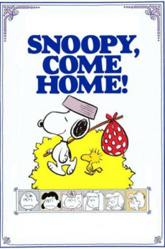

Country:United States, 80 minutes
Spoken languages:English
Genres:Family, Animation, Adventure, Drama, Comedy
Director(s):Bill Melendez
Writer(s):Charles M. Schulz
Video Codec:Unknown
Number: 6266

Certification:G
Storyline:
Snoopy receives a letter from a mysterious hospitalized girl named Lila. Alongside his bird friend Woodstock, Snoopy sets off on a cross-country journey to visit her, constantly facing strict "No Dogs Allowed" obstacles along the way. When it is revealed that Lila is actually Snoopy's original owner, the loyal hound faces a heartbreaking dilemma: stay with Charlie Brown or return to Lila.
Cast:
Chad Webber (voice of Charlie Brown), Bill Melendez (voice of Snoopy / Woodstock), Robin Kohn (voice of Lucy Van Pelt), Stephen Shea (voice of Linus Van Pelt), David Carey (voice of Schroeder)
Medium: Media file,
Location: D:\Charlie Brown Cartoons\Snoopy Come Home.mp4
Loaned: No
Aspect ratio: Unknown